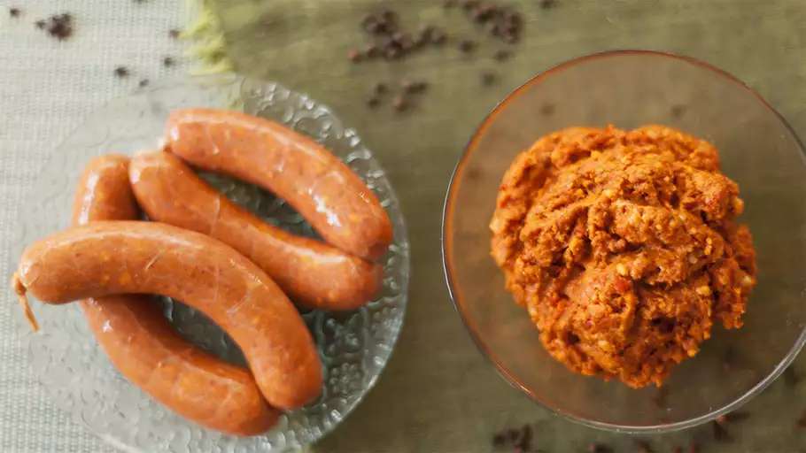

Home
Mexican Chorizo

Description
Mexican chorizo is a little different than its Spanish cousin, but equally delicious.
Use these sausages as you would any spicy sausage, or use the loose sausage meat to make
tacos for a flavor-packed change from regular old ground pork. Freeze for up to 3 months.
Ingredients
- 15 dried red chile peppers, seeded
- 2.1/4 pounds boneless, skinless pork butt, cut into 1/2-inch cubes
- 7 ounces pork fat, cut into 1/2-inch cubes
- 5 whole allspice berries
- 5 whole cloves
- 1/4 cup cider vinegar
- 4 cloves garlic, minced
- 1 tablespoon dried oregano
- 1 tablespoon salt
- 1 teaspoonn ground black pepper
- 1/2 teaspoon cumin seeds
- 1 hog casing
Directions
- Place chile peppers in a bowl and cover with hot water. Soak until softened,
about 30 minutes.
- Meanwhile, place pork butt and pork fat in the freezer for 30 minutes. Chill meat
grinder in the freezer to make grinding the meat easier.
- Grind allspice berries and cloves using a mortar and pestle or a spice grinder.
- Drain chile peppers and place in a food processor or blender. Add vinegar and
puree until smooth.
-
Fit the chilled meat grinder with a medium plate. Pass the partially frozen pork
and fat through the grinder. Combine ground meat with pureed chile peppers, garlic,
oregano, salt, pepper, and cumin in a bowl. Mix well with your hands for 2-3 minutes.
Cover bowl with plastic wrap and chill for 1 hour, or overnight.
-
Meanwhile, soak casing in cold water for about 30 minutes. Place the wide end
of a small sausage-stuffing funnel up against the sink tap and run cold water
through the inside of the casing.
-
Use the medium sausage-stuffing funnel attachment and place casing on the
outside of the tube. Start passing meat mixture through the funnel, stopping
just as it starts to come out the other end. Tie the casing into a knot at the end,
then continue passing the meat mixture through the funnel, supporting the
sausage with your other hand. Once the meat mixture is finished, tie the other
end of the casing into a knot.
- Twist the casing at regular intervals to create individual links, alternating
between twisting in opposite directions. Poke 2-3 small holes into each
sausage with a metal skewer to allow air to escape during cooking.
- Cook as desired or chill in the fridge for up to 3 days.